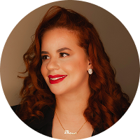

Meu nome é Bruna Nolasco Sou a Bruna, Engenheira de Mecatrônica que migrou para a área de UX/UI e Design de Produto, com uma mentalidade multidisciplinar. Concluí recentemente meu Mestrado em Tecnologia da Informação nos Estados Unidos e, atualmente, atuo como designer no setor de cibersegurança, contribuindo para aprimorar a experiência do usuário e a interface de produtos de software, tanto para desktop quanto baseados na nuvem.
Minha trajetória no design envolveu a colaboração com pequenas empresas de diversos segmentos, auxiliando-as na construção de marcas e sites mais sólidos e coesos. Acredito na combinação da lógica da engenharia com o *Design Thinking* para criar soluções inovadoras, funcionais e visualmente atraentes, que atendam genuinamente às necessidades dos usuários.